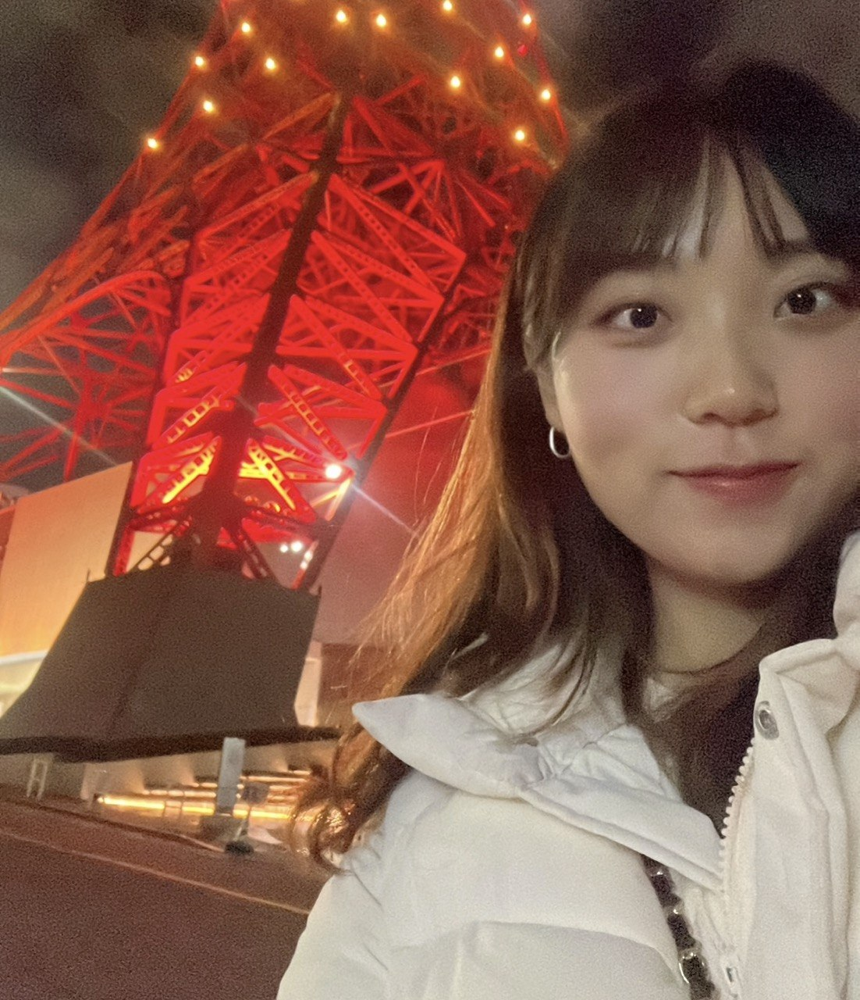

Hi! I am Hayeong Ryu, an M.S. student in Artificial Intelligence at Chung-Ang University, where I am a research assistant in the Intelligent Information Processing Lab (IIPL), advised by Professor YoungBin Kim. Here is my CV.
My research centers on trustworthy AI for natural language processing. I work on detecting and mitigating hallucination in language models using their internal signals, along with factual knowledge distillation and outcome-based evaluation.
Email: bluebarry37 [at] cau.ac.kr
Links: [Google Scholar] [GitHub] [LinkedIn] [CV]
* denotes equal contribution